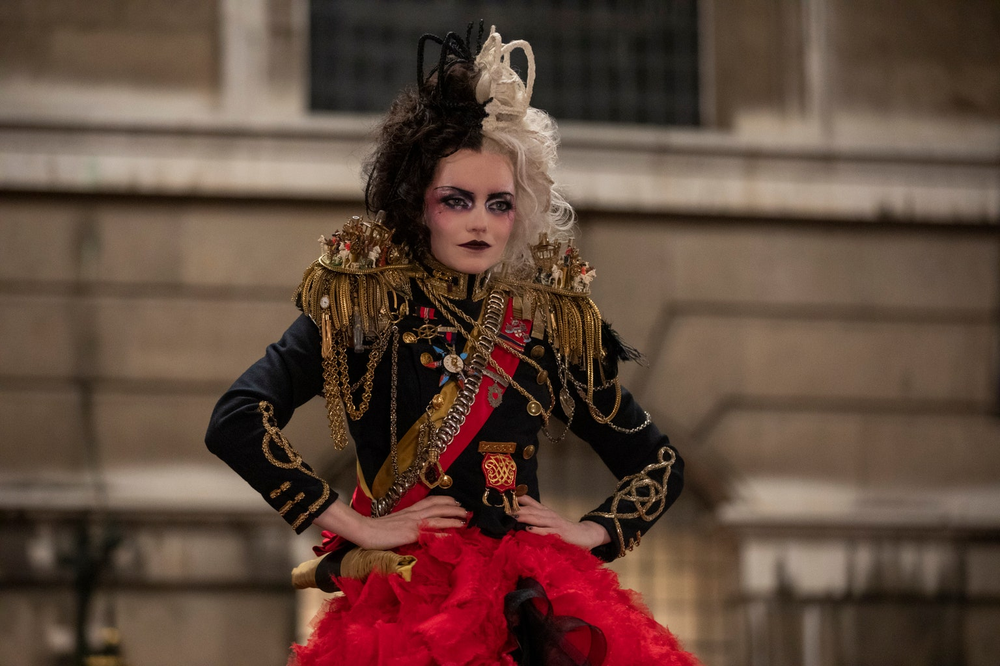
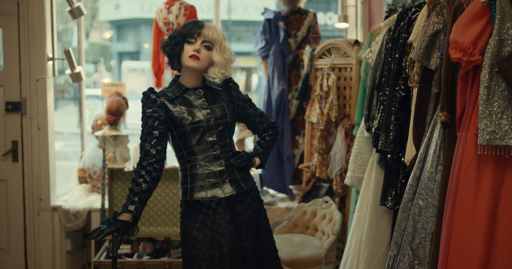
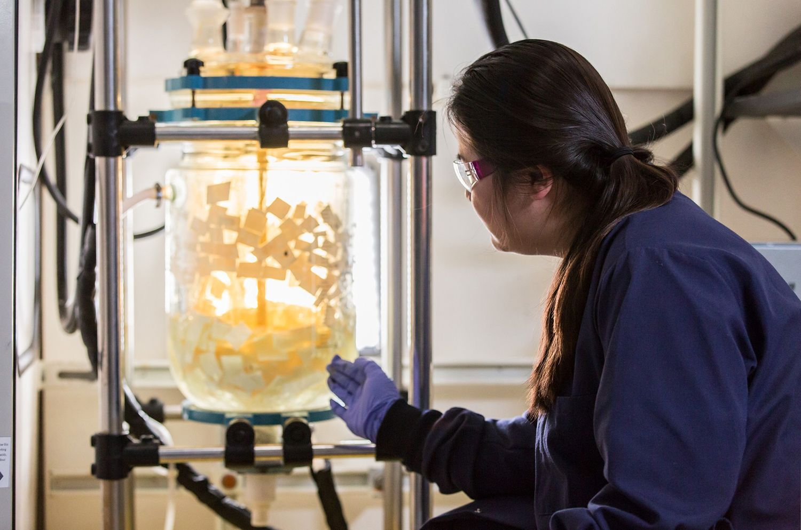
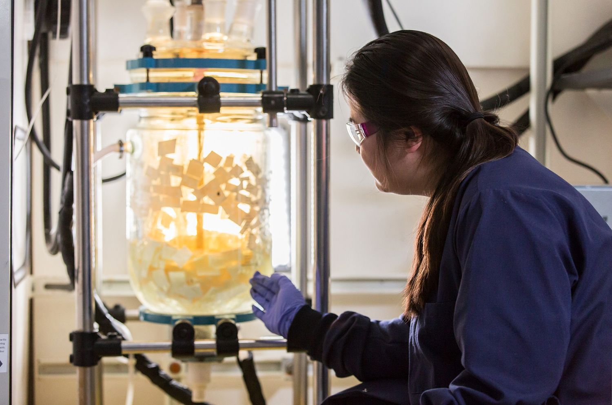

你不能不關注的環保永續議題！從循環經濟、生態保育、道德開採⋯讓我們攜手一起替人類續一個未來
當全球海洋面積縮減、森林大火頻傳，甚至是新冠病毒（COVID-19）全球肆虐，人們無不大力疾呼保護地球生態、落實永續行動，當你努力從個人日常生活做起的同時，許多鐘錶企業也早已開始從不同面向著手，積極扮演永續領頭羊的角色。
《時尚惡女：庫伊拉》電影服裝設計9大看點，設計師如何將甜姐兒艾瑪史東化身為狂野大反派？
這不是她的第一座奧斯卡獎座，她過去曾因為《窗外有藍天》(A Room with a View, 1985) 而拿獎，也曾因為《波士頓人》(The Bostonians, 1984)、《墨利斯的情人》(Maurice, 1987)、《此情可問天》(Howards End, 1992)、《長日將盡》(The Remains of the Day, 1993)、《理性與感性》(Sense and Sensibility, 1995)、《安娜與國王》(Anna and the King, 1999)、《謎霧莊園》(Gosford Park, 2001) 和《王者之聲》(The King’s Speech,2010) 這幾部片而獲提名。她在舞台與螢幕上的傑出生涯成就如今已經跨越超過五十年了。
「是製片 Kristin Burr 牽的線，我曾經在另一部迪士尼電影《摯友維尼》(Christopher Robin, 2018) 和她合作過。我有聽說過《時尚惡女：庫伊拉》的事，也知道艾瑪·史東有演出，但完全沒想過會有人找我加入。我想事情的經過，就是他們突然聽說艾瑪的行程有空檔，所以就趁著那個沒有太多人有空的期間把她敲了下來，而我也是。Kristin 傳訊息問我最近在忙什麼。那陣子，我有和克雷格·格里斯佩在倫敦碰面，讀過一次劇本，而且覺得『天啊，這部戲太厲害了。』我在倫敦有一群很有本事的人，其中有一人有空，也對這部戲躍躍欲試，所以我們就加入了。」
或許對於你我而言，配戴在手腕上的腕錶，只是一件讀時的工具、造型搭配的配飾，或是一件收藏品，但是對許多人而言，腕錶是分秒必爭的保命工具與探險夥伴——尤其是對探險家而言。自1930年代開始，Rolex的腕錶便陪伴多位探險家上山下海，在嚴苛的環境當中依舊如常運作，因而讓現在的我們能更加暸解地球上的生態環境，而當暸解得越多，便更深刻體會到地球生態平衡的重要性，因此，Rolex與探險家除了持續探查地球上未知的領域之外，也更加強紀錄地球環境的變遷，同時發起各項生態保護行動。
號召各界環保精英
Rolex除了與許多相關學會與機構合作之外，更進一步在1976年，成立「勞力士雄才偉略大獎」（Rolex Awards for Enterprise），每兩年舉辦一次，透過協助每一屆得獎者的相關計畫，致力改善人類生活、保護地球環境與文化遺產，而2019年的得獎者之一汪郁雯（Miranda Wang），是來自加拿大的分子生物學家，她開發出有別於傳統的回收工序，讓受污染與不可回收的塑膠製品於再製的過程中，減少二氧化碳的排放量，進而化身為日常生活中的實用產品，落實可持續性循環經濟的目標。
 
